CNN¶
Las Redes Neuronales Convolucionales (CNN - Convolutional Neural Network) nacen del problema de reconocimiento de imagen. Para que un computador envíe imágenes a un monitor, este convierte la imagen en un flujo de datos llamado pixeles; por lo que una imagen está representada por una matriz de valores de los pixeles, es decir que, a cada posición de la matriz le corresponde un punto de la imagen.
Para comprender cómo funcionan las convoluciones, hay que comenzar desde la entrada. La entrada es una imagen compuesta por una o más capas de píxeles, denominadas canales, y la imagen utiliza valores desde 0, lo que significa que el píxel individual está completamente apagado, hasta 255, lo que significa que el píxel individual está encendido.
Por lo general, una imagen es manipulada por un computador como una matriz tridimensional que consiste en la altura, el ancho y la cantidad de canales, que son tres para una imagen RGB.
Siete¶
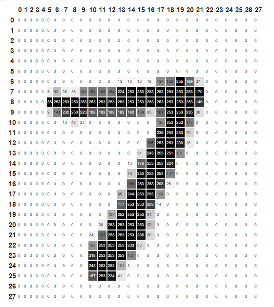
Siete-pixeles 28x28¶
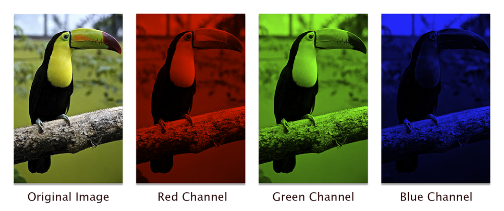
RGB¶
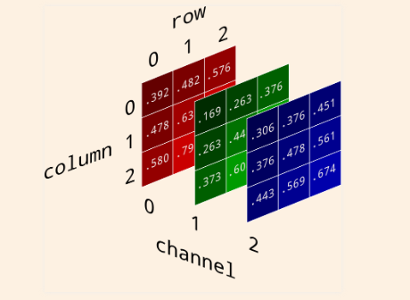
RGB-pixeles¶
La diferencia fundamental entre una capa densamente conectada y una capa de convolución es que las capas densas aprenden patrones globales en su espacio de características de entrada (tomaría todos los pixeles), mientras que las capas de convolución aprenden patrones locales. En el caso de imágenes, patrones que se encuentran en pequeñas ventanas 2D de las entradas.
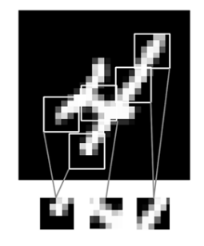
local_pattern¶
La anterior característica le da a las CNN dos propiedades interesantes:
Los patrones que aprenden son invariantes al desplazamiento. Una CNN reconoce donde sea el mimo patrón. esto hace que requiera menos muestras de entrenamiento.
Pueden aprender jerarquías espaciales de los patrones. Una primera capa de convolución aprenderá pequeños patrones locales como bordes, una segunda capa de convolución aprenderá patrones más grandes hechos de las características de las primeras capas, y así sucesivamente.
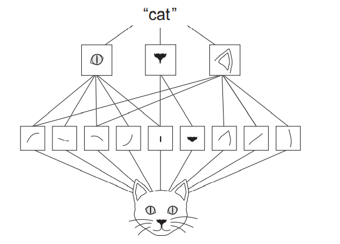
cat¶
La arquitectura CNN tiene los mismos componentes de las redes neuronales profundas: Capas conectadas y funciones de activación; sin embargo, también cuentan con 2 componentes más, llamados capa de convolución (convolution layer) y capas de reducción (pooling layer).
Capa Convolucional:¶
Una convolución funciona al operar en pequeños fragmentos de la imagen en todos los canales simultáneamente. Los fragmentos de la imagen son simplemente una ventana en movimiento: la ventana de convolución puede ser un cuadrado o un rectángulo, y comienza en la parte superior izquierda de la imagen y se mueve de izquierda a derecha y de arriba a abajo.
El recorrido completo de la ventana sobre la imagen se denomina filtro (o kernel) e implica una transformación completa de la imagen.
Cuando la ventana enmarca un nuevo fragmento, la ventana se desplaza una cierta cantidad de píxeles; la cantidad de deslizamiento se llama stride.
Un stride de 1 significa que la ventana se mueve un píxel hacia la derecha o hacia abajo; un stride de 2 implica un movimiento de dos píxeles.
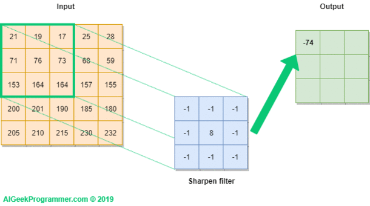
Convolución¶
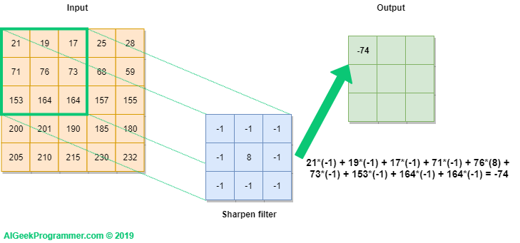
CNN-convolution-1¶
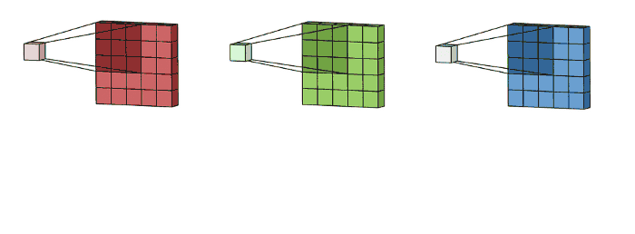
Kernel-RGB¶
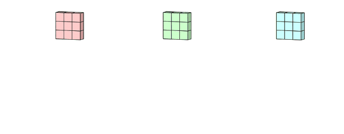
Resultado-Convolución¶
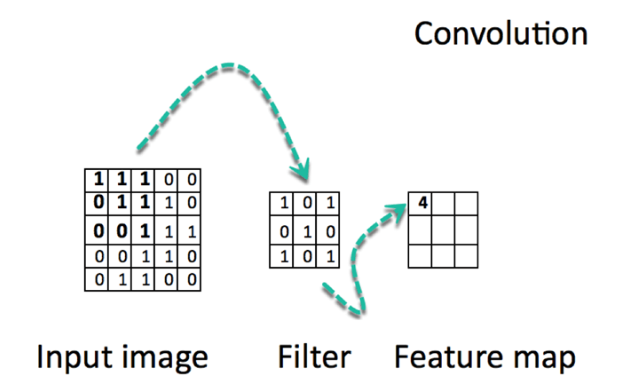
FeatureMap¶
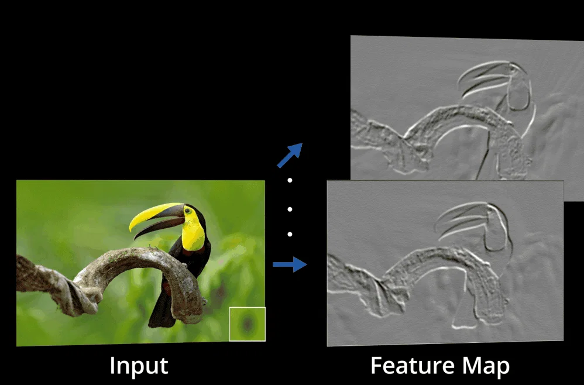
Input_feature_map¶
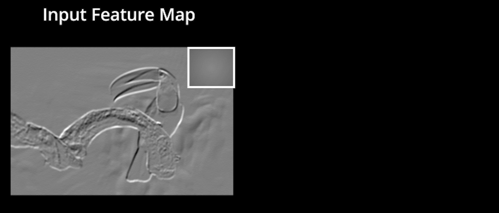
Input_feature_map1¶
Esta arquitectura permite que la red se concentre en características de bajo nivel en la primera capa oculta, luego las ensambla en características de nivel superior en la siguiente capa oculta, y así sucesivamente. Como si se colocara una filmina sobre otra cada una con diferentes características.
Las convoluciones operan sobre tensores 3D (mapas de características), con dos ejes espaciales (alto y ancho) y un eje de profundidad (canales). Para una imagen RGB, la dimensión del eje de profundidad siempre es 3. Para una imagen en blanco y negro, la profundidad es 1 (niveles de gris).
Cuando se construye una CNN, se debe configurar lo siguiente:
El número de filtros (cantidad de filtros que operarán en la imagen completa).
El tamaño del filtro (si el filtro es cuadrado, se establece solo un lado, si se quiere rectangular se establece el ancho y el alto).
Los strides usualmente son 1 o 2.
Capa de Agrupamiento (Pooling):¶
Las capas convolucionales transforman la imagen original usando varios tipos de filtro, cada capa encuentra un patrón específico en la imagen, como colores o formas que hace que la imagen sea reconocible. Esto hace que la complejidad de la neurona sea mayor al crecer el número de parámetros.
La agrupación o pooling de capas puede simplificar la salida recibida de las capas convolucionales, reduciendo así el número de operaciones sucesivas realizadas y utilizando menos operaciones convolucionales para realizar el filtrado. Esto lo realiza con la agrupación de características llamada Patch, que es similar a un parche o retazo que contiene características similares, con el fin de reducir los tiempos de procesamiento.
El tamaño de los Patch de las entradas está comúnmente definido como 3 x 3 o 5x 5 (3 x 3 es la elección más común)
Existen diversos tipos de capas de agrupamiento, el ejemplo anterior utiliza el método Max Pooling, porque usa la máxima transformación de la ventana deslizante. Otras opciones pueden ser:
Promedio de la ventana.
El máximo global.
El promedio global.
Además de estas capas, también, existen modelos dependiendo de dimensionalidad de la entrada
1-D pooling (trabaja en vectores).
2-D pooling (trabaja en matrices).
3-D pooling (ideal para datos espacio-temporales, como imágenes a través del tiempo).
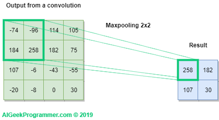
Maxpooling¶
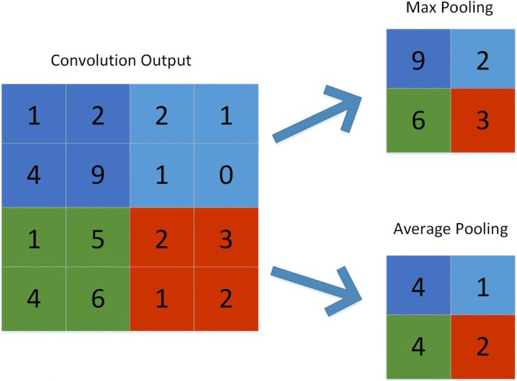
Pooling¶
Operación Max-pooling:
El principal papel del Max Pooling es reducir agresivamente los mapas de características y las operaciones de convolución.
La agrupación máxima consiste en extraer ventanas de los mapas de características de entrada y generar el valor máximo de cada canal.
Una gran diferencia con la convolución es que el Max-pooling generalmente se realiza con ventanas de 2 × 2 y strides de 2, para reducir la muestra de los mapas de características en un factor de 2.
Por ejemplo: antes de las primeras capas MaxPooling2D, el mapa de características era de 26 × 26, pero la operación de Max-polling lo reduce a la mitad a 13 × 13.
Operación de una CNN:¶
Las convoluciones operan sobre tensores 3D, llamados mapas de características, con dos ejes espaciales (alto y ancho) así como un eje de profundidad (también llamado eje de canales).
La operación de convolución extrae los Patch de su mapa de características de entrada y aplica la misma transformación a todos estos retazos de imagen, produciendo un mapa de características de salida.
El mapa de características de salida sigue siendo un tensor 3D ya que tiene un ancho y una altura. Su profundidad puede ser arbitraria, porque la profundidad de salida es un parámetro de la capa y los diferentes canales en ese eje de profundidad ya no representan colores, sino que representan filtros.
La profundidad del mapa de características, está determinada por el número de filtros en la convolución.
El proceso completo de la convolución se observa en la siguiente imagen:
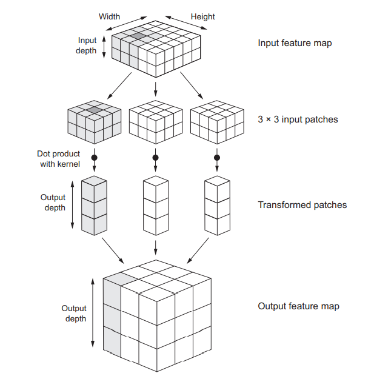
full_convolution¶
Tenga en cuenta que el ancho y alto de salida pueden diferir del ancho y alto de entrada. Pueden diferir por dos razones:
Efectos de borde, que se pueden contrarrestar rellenando el mapa de características de entrada
El uso de strides, como se definió anteriormente.
Los efectos de padding (relleno):¶
Si se cuenta con un mapa de características de 5x5 hay solo 9 formas de ubicar un cuadrado de 3x3 (patch); sin embargo, habrá extremos en los que se deba rellenar, es decir, si desea obtener un mapa de características de salida con las mismas dimensiones espaciales que la entrada, puede usar el relleno (padding).
El relleno (padding) consiste en agregar una cantidad adecuada de filas y columnas a cada lado del mapa de características de entradas para que sea posible ajustar las ventanas de convolución central alrededor de cada mosaico de entrada.
Para una ventana de 3 × 3, agrega una columna a la derecha, una columna a la izquierda, una fila en la parte superior y una fila en la parte inferior. Para una ventana de 5 × 5, agrega dos filas.
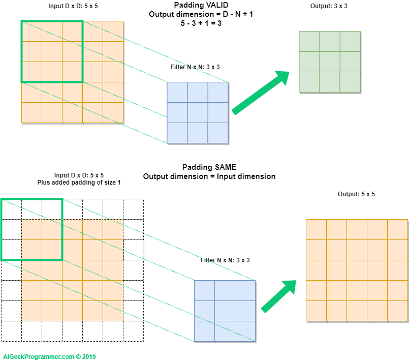
Padding¶
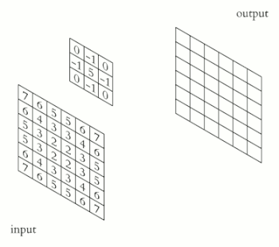
Padding¶
Stride (Capa de convolución):¶
La definición de convolución hasta el momento asume que los mosaicos centrales de las ventanas de convolución son todos contiguos, pero la distancia entre dos ventanas sucesivas es un parámetro de la convolución al que se le llama Stride, se toma como 1 por defecto.
A continuación, se observan Patches extraídos por una convolución de 3 × 3 con strid 2 sobre una entrada de 5 × 5 (sin relleno).
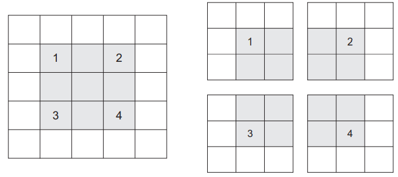
Stride¶
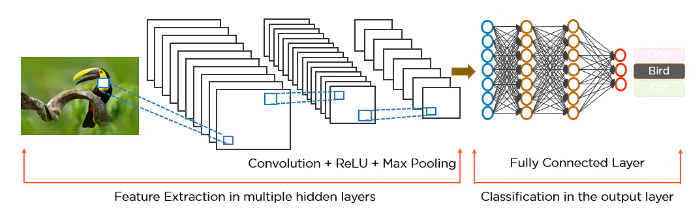
CNN¶
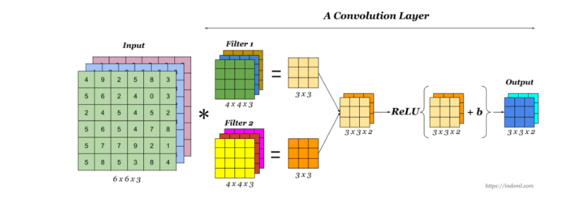
CapaConvolución¶
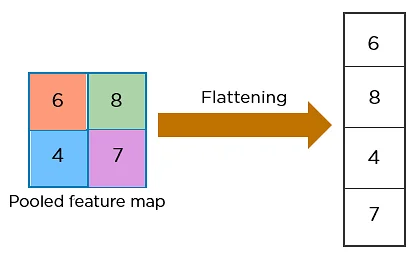
flattening¶
from keras.models import Sequential
from keras.layers import Conv2D
from keras.layers import MaxPooling2D
Parámetros del Modelo con Max-Pooling:¶
model = Sequential()
model.add(Conv2D(32, (3, 3), activation='relu', input_shape=(28, 28, 1)))
model.add(MaxPooling2D((2, 2)))
model.add(Conv2D(64, (3, 3), activation='relu'))
model.add(MaxPooling2D((2, 2)))
model.add(Conv2D(64, (3, 3), activation='relu'))
model.summary()
Model: "sequential_4"
_________________________________________________________________
Layer (type) Output Shape Param #
=================================================================
conv2d_9 (Conv2D) (None, 26, 26, 32) 320
max_pooling2d_6 (MaxPooling (None, 13, 13, 32) 0
2D)
conv2d_10 (Conv2D) (None, 11, 11, 64) 18496
max_pooling2d_7 (MaxPooling (None, 5, 5, 64) 0
2D)
conv2d_11 (Conv2D) (None, 3, 3, 64) 36928
=================================================================
Total params: 55,744
Trainable params: 55,744
Non-trainable params: 0
_________________________________________________________________
Parámetros del Modelo sin Max-Pooling:
model = Sequential()
model.add(Conv2D(32, (3, 3), activation='relu', input_shape=(28, 28, 1)))
model.add(Conv2D(64, (3, 3), activation='relu'))
model.add(Conv2D(64, (3, 3), activation='relu'))
model.summary()
Model: "sequential_5"
_________________________________________________________________
Layer (type) Output Shape Param #
=================================================================
conv2d_12 (Conv2D) (None, 26, 26, 32) 320
conv2d_13 (Conv2D) (None, 24, 24, 64) 18496
conv2d_14 (Conv2D) (None, 22, 22, 64) 36928
=================================================================
Total params: 55,744
Trainable params: 55,744
Non-trainable params: 0
_________________________________________________________________